Cryo-EM
Seeing Biology at Atomic Resolution
Image: Bjorn Forsberg (@bforsb) via X, 2024
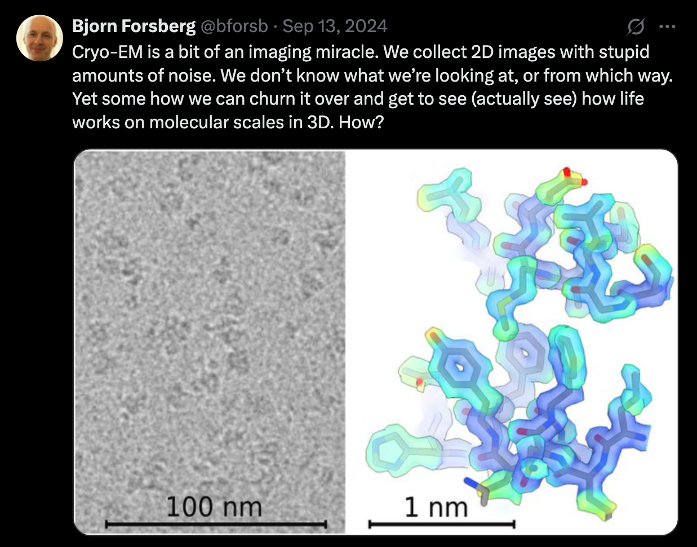
Electron Microscopy & Biological Samples
Why do we need cryo-EM?
The Problem
- Vacuum damage — Water evaporates instantly in the EM column vacuum, destroying hydrated biological structure
- Radiation damage — High-energy electrons break chemical bonds; biological specimens are extremely radiation-sensitive
- Fixation artifacts — Chemical fixation and dehydration alter native protein conformation
- Low contrast — Light atoms (C, N, O) scatter electrons weakly, producing very low signal-to-noise images
- Charging — Non-conductive biological specimens accumulate charge under electron beam
- Thickness limit — Specimen must be <100 nm for electron transmission
→
The Cryo Solution
Flash-freeze the specimen in vitreous (amorphous) ice to preserve its native, hydrated state — no fixation, no staining, no dehydration.
- Vitreous ice — Rapid cooling (~104 °C/s) in liquid ethane prevents crystalline ice formation
- Native state — Proteins remain in solution-like conformation within the ice layer
- Reduced damage — Imaging at liquid nitrogen temperature (−196 °C) slows radiation damage
- Low-dose imaging — Only 20–60 e−/Ų total dose; compensated by averaging thousands of particle images
Dubochet et al., Q Rev Biophys (1988) · Glaeser, Biophys J (1971) · Taylor & Glaeser, Science (1974)
Conventional TEM vs Cryo-EM
Two approaches to electron microscopy of biological specimens
Conventional TEM
- Preparation: Chemical fixation, dehydration, heavy metal staining (uranyl acetate, phosphotungstic acid)
- Advantages: High contrast, simple prep, radiation resistant samples
- Limitations: Artifacts from staining/dehydration; limited resolution (~15–20 Å); only surface topology
- Best for: Quick screening, morphology assessment, quality control
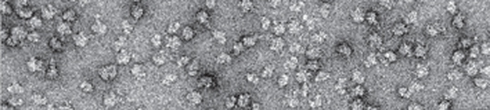
vs
Cryo-EM
- Preparation: Flash-freezing in vitreous ice — no fixation, no staining, no dehydration
- Advantages: Native state preservation, near-atomic resolution (≤2 Å), multiple conformations
- Limitations: Low SNR, radiation sensitivity, expensive equipment, complex sample prep
- Best for: High-resolution structures, membrane proteins, large complexes
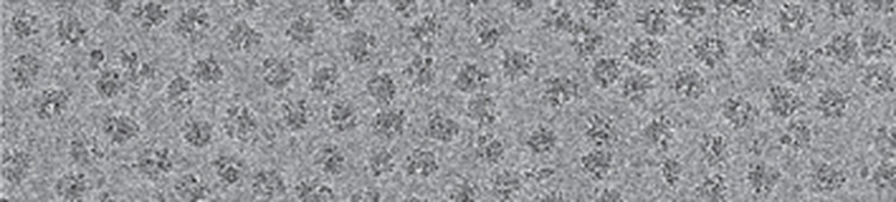
Henderson, Q Rev Biophys (1995) · Glaeser, Nat Methods (2016)
Key Components of Modern Cryo-TEM
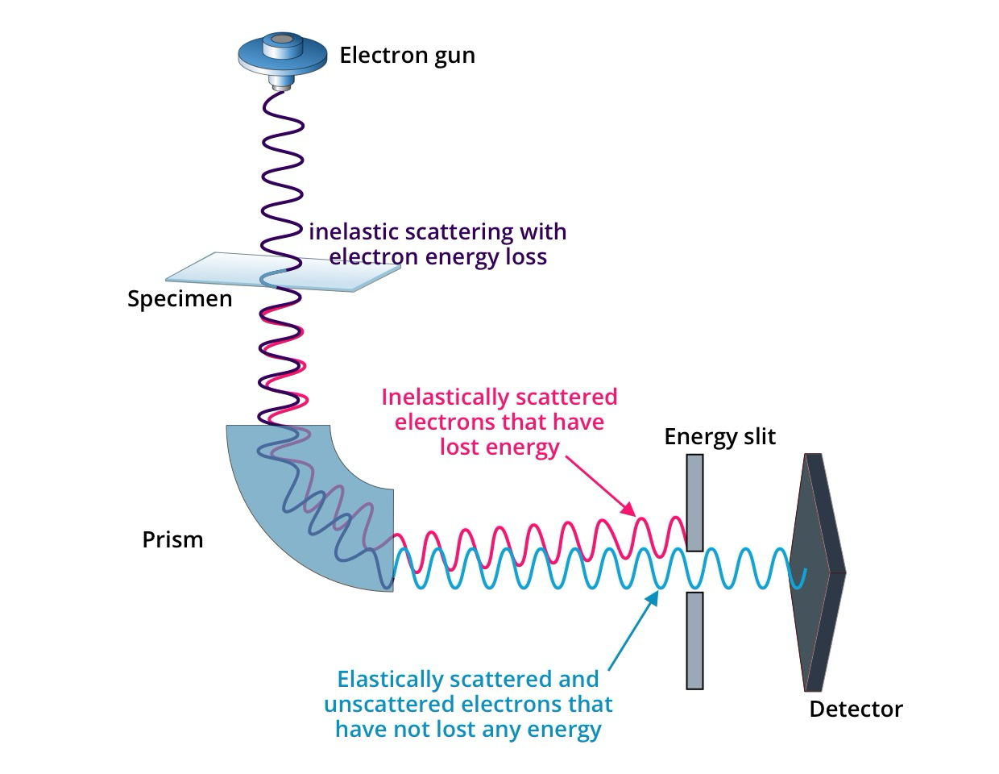
Zero-loss filtering: prism + energy slit
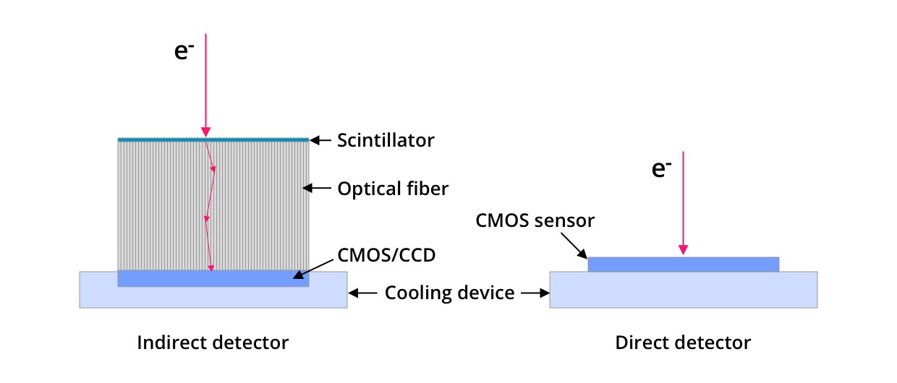
Indirect (scintillator+CCD) vs Direct (CMOS)
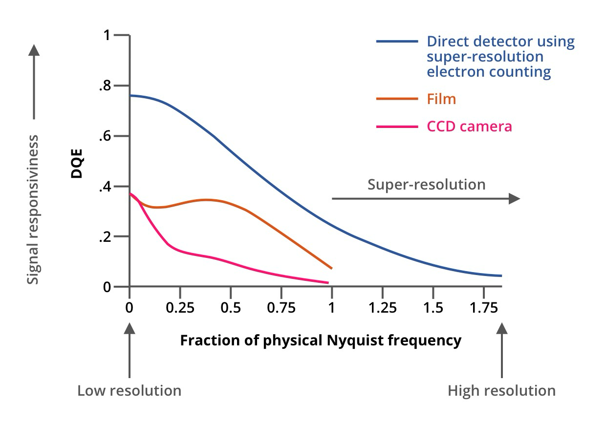
DQE: Direct detector > Film > CCD
Cryo Holder / Autoloader
- Maintains specimen at −180 °C (liquid nitrogen)
- Autoloader cassette holds up to 12 grids
- Preserves vacuum during grid exchange
- Enables unattended multi-grid data collection
Energy Filter (Zero-loss)
- Prism separates electrons by energy loss
- Energy slit selects only zero-loss (elastic) electrons
- Removes inelastic scattering → improves contrast & SNR
- Essential for thick specimens (>50 nm)
Direct Electron Detector (DED)
- No scintillator → direct electron counting on CMOS
- DQE >2× over film/CCD at all spatial frequencies
- Single electron counting mode maximizes SNR
- Movie-mode enables motion correction
Images: MyScope (myscope.training), Microscopy Australia · McMullan et al., Ultramicroscopy (2009) · Faruqi & McMullan, Q Rev Biophys (2011)
From Blobs to High Resolution
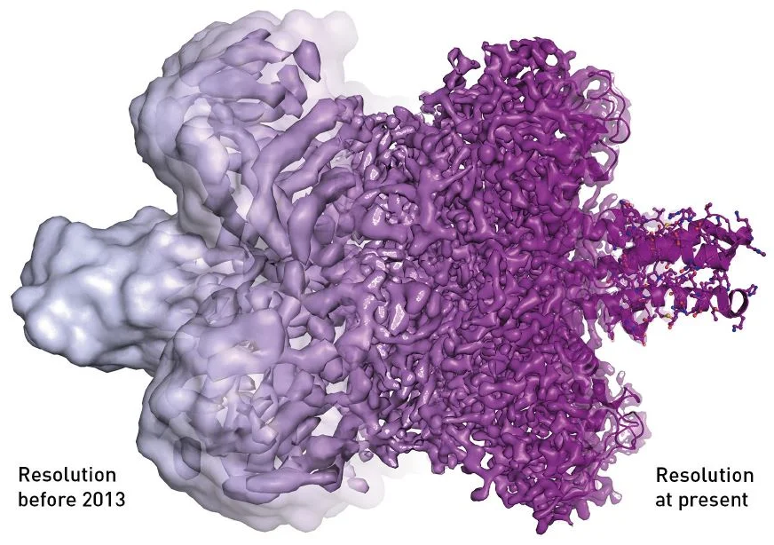
Before 2013
- Resolution typically 8–15 Å (“blobology”)
- Secondary structure elements barely visible
- CCD detectors + film: poor DQE
- No motion correction → beam-induced blur
After 2013
- Routine 2–4 Å resolution
- Side chains, ligands, water molecules visible
- Direct electron detectors: electron counting
- Movie-mode + motion correction → sharp images
From Blobs to High Resolution
Foundational milestones — Part 1
 Directions
Directions
of view
structure
Transmission image
is a projection
Fourier transform of a
projection gives coefficients
in a section of
“Fourier space”
Reconstruction by
Fourier synthesis
using all sections
T4 phage tail Fourier reconstruction
1968First 3D reconstruction from EM
- Specimen: T4 bacteriophage tail (helical symmetry)
- Method: Helical Fourier reconstruction — digital computer for 2D → 3D
- Resolution: ~20–30 Å. Klug: Nobel Prize Chemistry 1982
💡 Established Projection-Slice Theorem → FT of 2D projection = central section of 3D FT. Mathematical foundation for medical CT and all 3D reconstruction
 Frozen catalase electron diffraction
Frozen catalase electron diffraction
1974Frozen hydrated protein crystals
- Specimen: Catalase crystals — frozen hydrated electron diffraction
- Result: Diffraction spots observed to ~3 Å → crystal structure preserved
- Limitation: Slow cooling → crystalline ice formation → specimen damage unresolved
💡 First proof of frozen hydration principle. Practical vitreous ice technique solved 8 years later by Dubochet
 Vitrified virus in amorphous ice
Vitrified virus in amorphous ice
1982Vitrification
- Method: Plunge-freezing in liquid ethane → cooling >10⁵ K/s
- Result: Vitreous (amorphous) ice — native state preserved without fixation/dehydration/staining
- Award: Nobel Prize Chemistry 2017 (Dubochet, Henderson, Frank)
💡 Foundation of all modern cryo-EM sample preparation — same principle used in labs worldwide to this day
From Blobs to High Resolution
Foundational milestones — Part 2
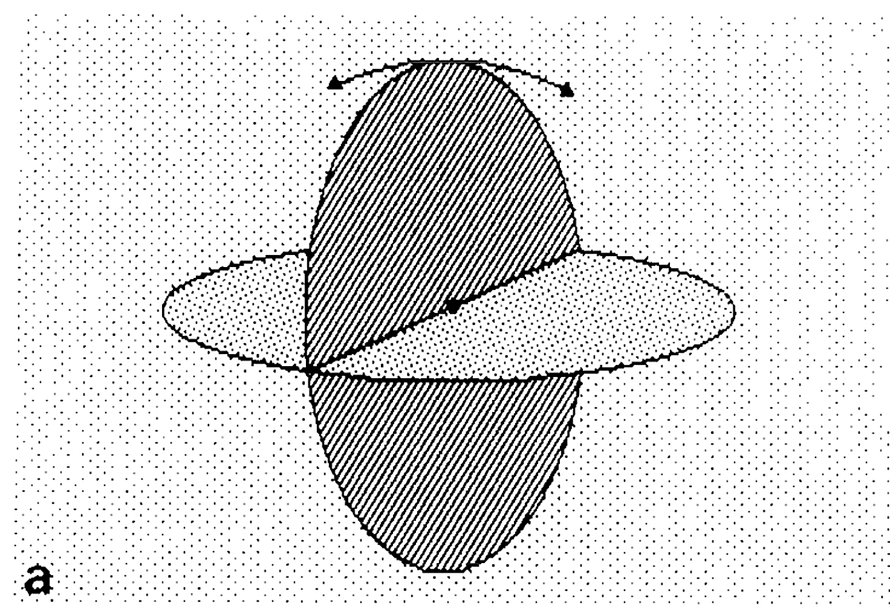
Each projection’s FT = a plane through 3D Fourier space
Two planes always meet at a common line
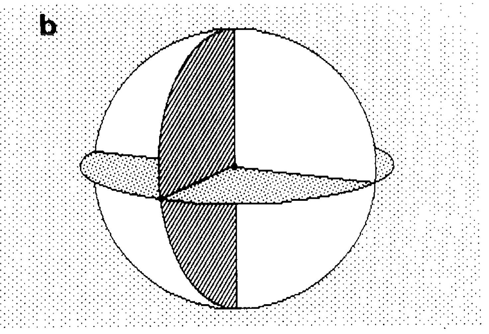
Find common lines on unit sphere
3+ projections → all relative orientations determined
Two different 2D projections always share a common line
↓
3D reconstruction from random orientations — no tilting needed
Common-line angular reconstitution (van Heel, 1987)
1987Angular reconstitution
- Method: Common-line approach — determine projection orientations in Fourier space
- Breakthrough: 3D reconstruction from untilted images alone — no tilting required
- Software: Implemented in IMAGIC → theoretical basis for EMAN, RELION
💡 Solved the orientation problem → no tilting needed. Core algorithm of all SPA software
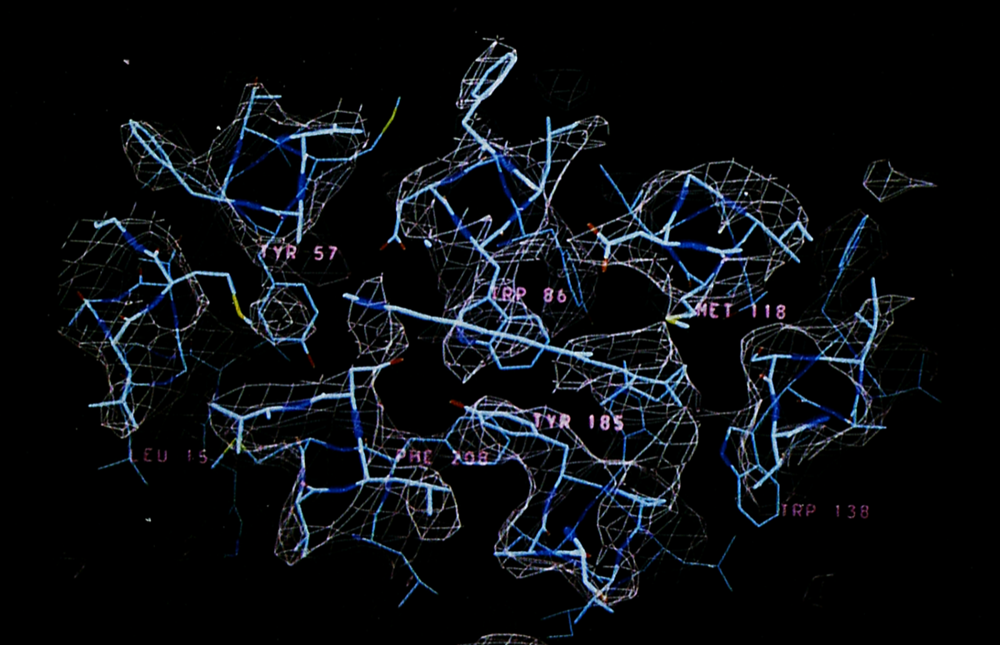
2D crystal + e− diffraction → 3.5 Å density map
↓
Individual residues visible — EM can reach atomic resolution
Bacteriorhodopsin 3.5 Å structure
1990First atomic structure by EM
- Specimen: Bacteriorhodopsin 2D crystals — electron crystallography
- Resolution: 3.5 Å (in-plane) — 72 images (phases) + 150 diffraction patterns (amplitudes)
- Structure: 7-TM helix + retinal chromophore. Nobel Prize 2017
💡 First proof that EM can achieve atomic-level structures. However, required 2D crystals → single-particle remained unsolved
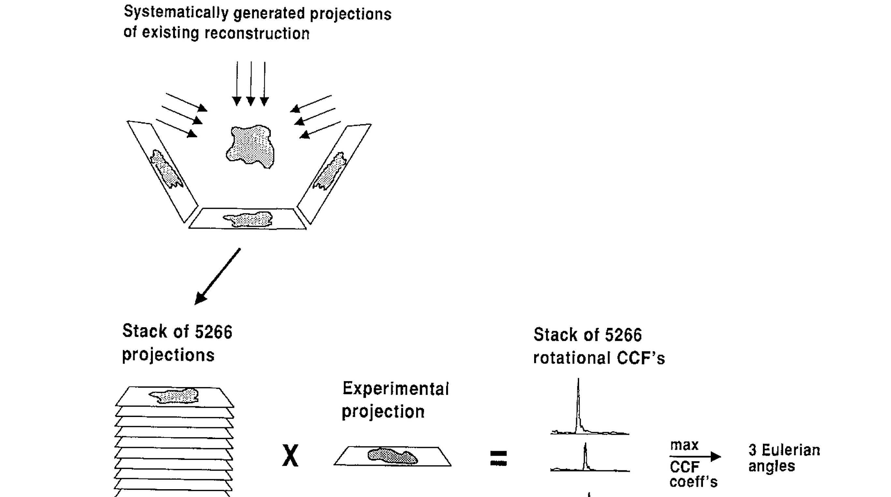
OSSP Method
3D ref → 5,266 projections (Δθ=2°)
CCF each particle vs all refs
→ max CCF → orientation (φ,θ,ψ)
Match each image to projections of a 3D reference, not to each other
↓
Refine orientation + translation iteratively — no tilt pairs needed
OSSP block diagram (Penczek, Grassucci & Frank, 1994)
1994Iterative projection matching
- Specimen: 70S E. coli ribosome (~2.5 MDa, asymmetric)
- Method: Iterative comparison of 3D model ↔ experimental images → orientation refinement
- Legacy: Implemented in SPIDER (1996). Frank: Nobel 2017 for single-particle methodology
💡 Established iterative refinement concept. Implemented in SPIDER → evolved into ML/Bayesian methods
The Resolution Revolution
Steady progress toward atomic resolution — Part 1
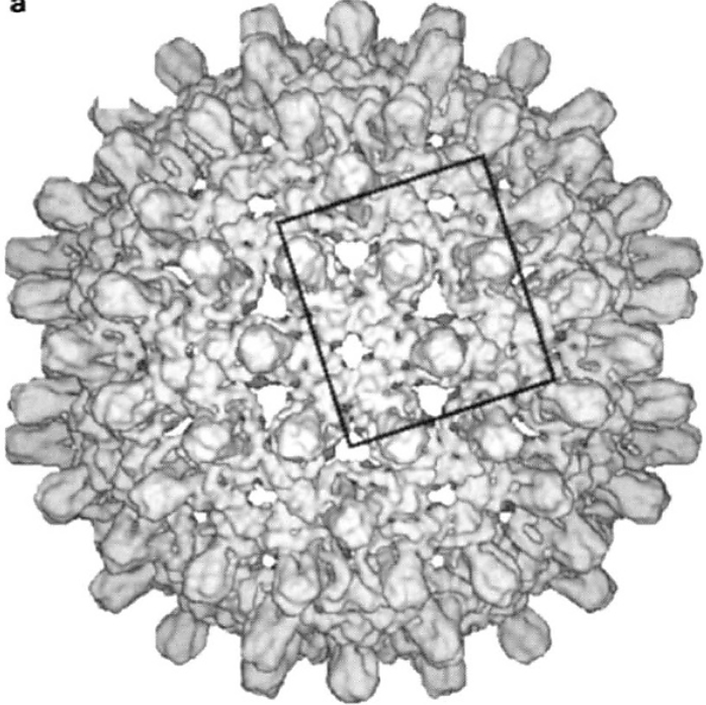
 Böttcher et al. 7.4 Å — a: T=4 capsid, ~6,400 particles · b: 4 quasi-equivalent subunits colored
Böttcher et al. 7.4 Å — a: T=4 capsid, ~6,400 particles · b: 4 quasi-equivalent subunits colored
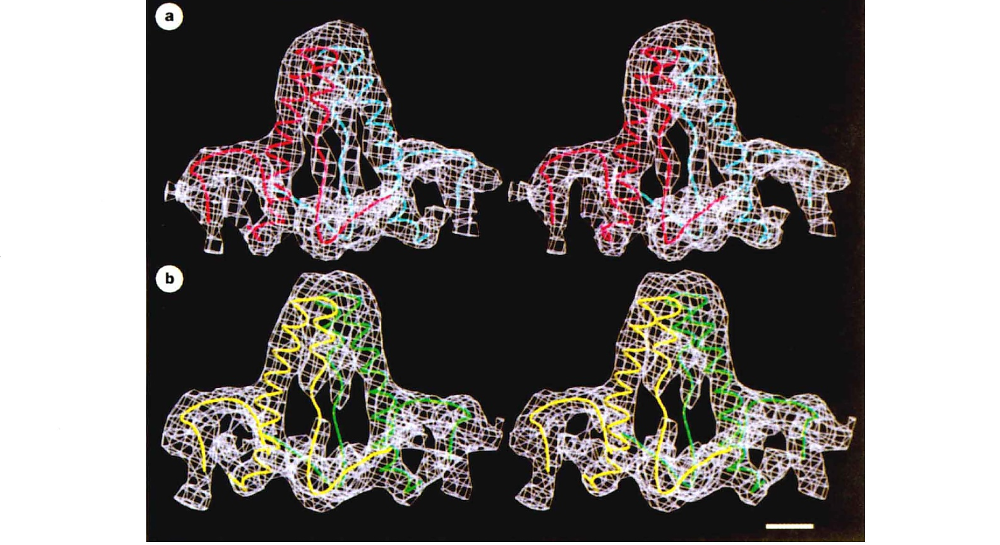
Conway et al. 9 Å — Spike dimer density + wire model → 4-helix bundle confirmed
Böttcher et al. & Conway et al., Nature 386 (1997)
1997Sub-nanometer virus structure
- Resolution: 7.4 Å (Böttcher) / 9 Å (Conway) — HBV capsid
- Achievement: First protein fold determined by EM alone — 4-helix bundle in spike
💡 Two independent groups, same Nature issue — sub-nm EM is real
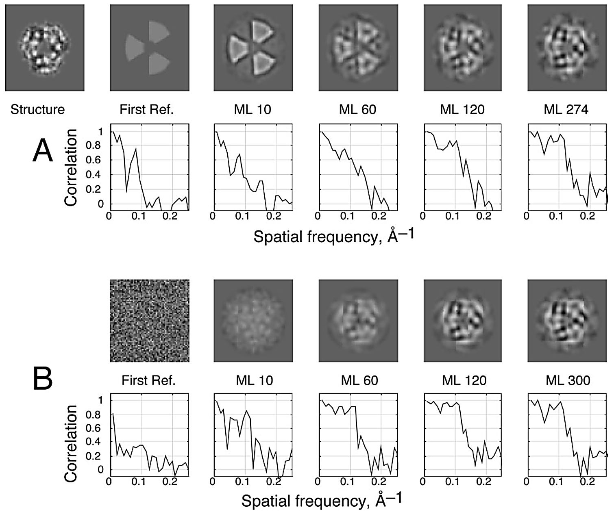
A: Wrong starting ref (“radiation symbol”) → ML converges to true structure (n=274)
B: Pure noise starting ref → ML still converges (n=300) — no model bias
ML refinement — robust convergence
1998Maximum likelihood classification
- Innovation: Cross-correlation → probabilistic alignment (weighted over all orientations)
- Legacy: Extended to 3D by Scheres → theoretical foundation of RELION (2012)
💡 Deterministic → probabilistic paradigm shift
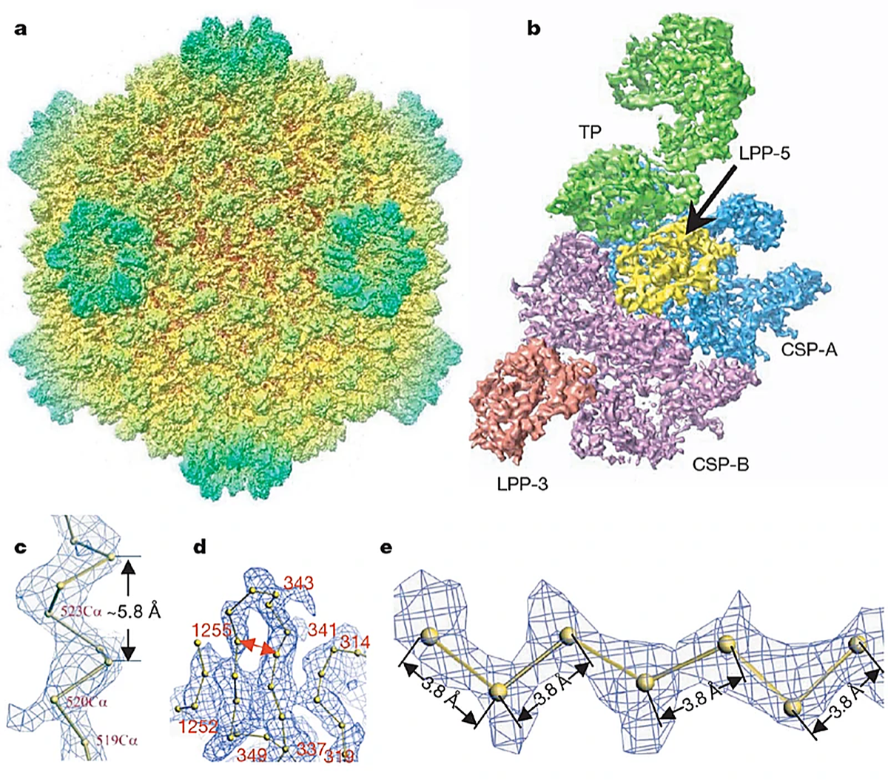
a,b: Full CPV capsid (radial color) & asymmetric unit with 5 proteins
c–e: At 3.88 Å, α-helix pitch and β-strand spacing visible → Cα backbone traced directly from density
CPV 3.88 Å de novo atomic model
2008De novo atomic model from cryo-EM
- Resolution: 3.88 Å — achieved with CCD detector (before DED era)
- Achievement: De novo atomic model by single-particle EM — no crystal needed
💡 Broke the 4 Å barrier → cryo-EM can determine atomic structures
The Resolution Revolution
Direct electron detectors transform the field — Part 2
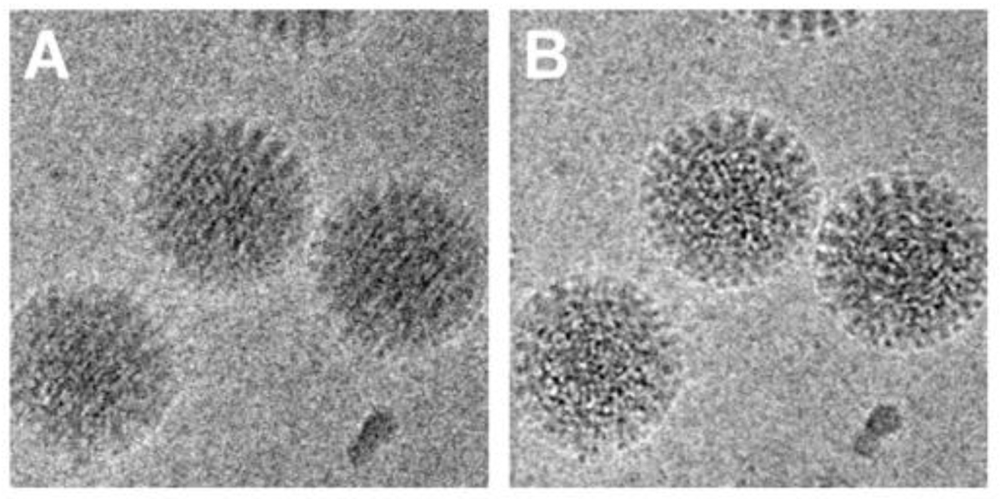
Before correction
After frame alignment
Split exposure into subframes → align each frame → correct beam-induced motion
↓
DQE >2× over film/CCD → high-resolution details recovered
K2 Summit: beam-induced motion correction (Li et al., 2013)
2012DED + motion correction
- Technology: Gatan K2 Summit — electron counting + movie-mode
- Demonstration: 20S proteasome 3.3 Å (D7). DQE >2× over film/CCD
- Key insight: Resolution-limiting factor = beam-induced specimen motion
💡 Frame alignment for motion correction → key technical breakthrough of the Resolution Revolution
 A: FSC — near-atomic resolution from only ~30,000 particles
A: FSC — near-atomic resolution from only ~30,000 particles
C–I: α-helix pitch and β-strand separation clearly resolved in density
2013Ribosome from 30k particles
- Detector: FEI Falcon DED — back-thinned, movie-mode
- Result: Near-atomic map from 30,000 particles (100× fewer than before)
- Advance: 2D/3D classification → structural heterogeneity resolved
💡 DED + RELION → 100× fewer particles needed for near-atomic resolution
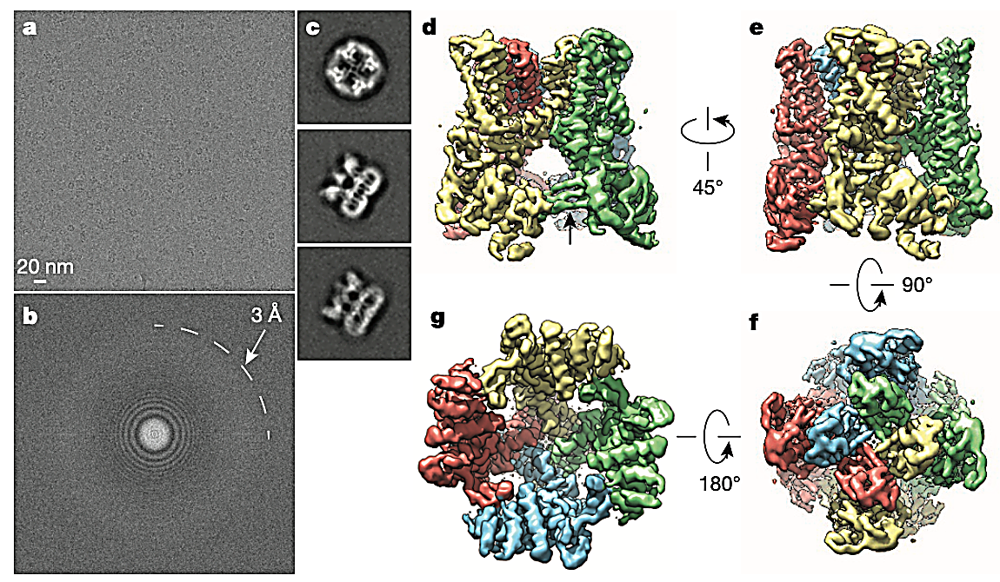
a: Cryo-EM micrograph (1.7 μm defocus) b: FFT — Thon rings to ~3 Å
c–f: 3D map (each subunit color-coded) — side / top / bottom views
~300 kDa, C4 symmetry only — first side-chain resolution for a membrane protein
2013TRPV1 at 3.4 Å
- Specimen: TRPV1 — ~300 kDa, C4 symmetry only
- Method: DED + motion correction + RELION
- Impact: First small membrane protein at near-atomic resolution
💡 Membrane protein at near-atomic → “Resolution Revolution” started
Breaking the 3 Å Barrier
Cryo-EM reaches resolutions rivaling X-ray crystallography
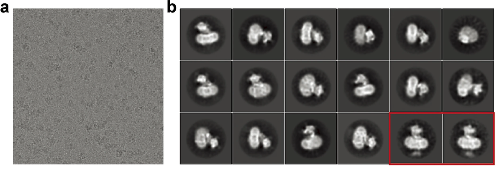

2015γ-secretase at 3.4 Å
- Protein: Human γ-secretase — ~170 kDa, 4-subunit complex
- Finding: First atomic model — AD mutation hotspots mapped in PS1
- Significance: Alzheimer’s drug target solved without crystals
💡 Membrane protein drug target → de novo atomic model by cryo-EM
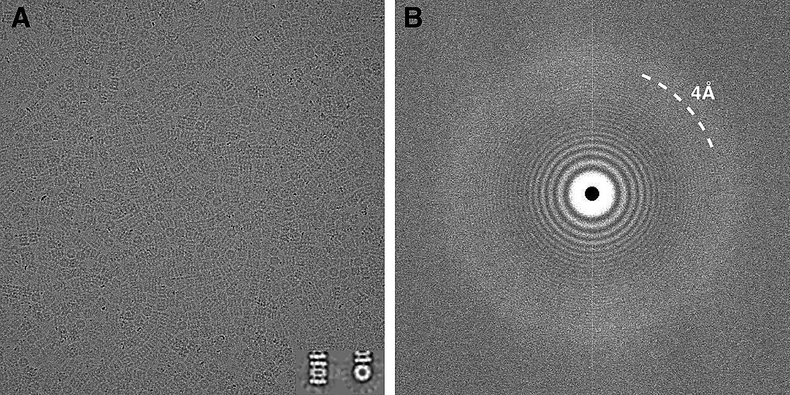

201520S proteasome at 2.8 Å
- Protein: T. acidophilum 20S proteasome — 700 kDa, D7
- Finding: Rotamers + water molecules resolved
- Significance: Cryo-EM matches X-ray for drug design
💡 Sub-3 Å → structure-based drug design now possible by cryo-EM

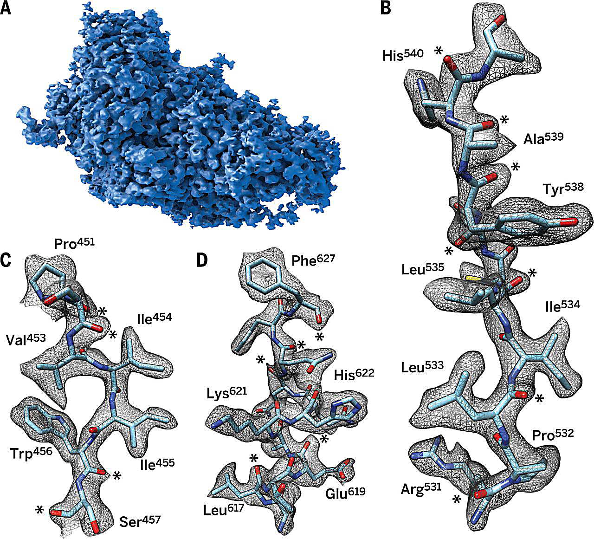
2015β-galactosidase at 2.2 Å
- Protein: E. coli β-galactosidase + PETG — 465 kDa, D2
- Finding: Ligand, ~800 waters, Mg²⁺/Na⁺ ions visible
- Significance: Bottleneck = sample quality, not imaging
💡 2 Å barrier broken — sample prep is now the limiting factor
The Resolution Revolution
2014–2015: Major journals summarize the cryo-EM transformation
“The Resolution Revolution”
Perspective that named the transformation. New detectors and image processing had suddenly enabled near-atomic cryo-EM structures.
Kühlbrandt · Science 343, 1443 (2014)
“How cryo-EM is revolutionizing structural biology”
Reviews two key advances: (1) direct electron detectors with movie mode, (2) motion correction + 3D classification. Their synergy was unexpectedly powerful.
Bai, McMullan & Scheres · TiBS 40, 49 (2015)
“The revolution will not be crystallized”
News feature reporting on labs worldwide adopting cryo-EM. Brought the revolution to the broader scientific community.
Callaway · Nature 525, 172 (2015)
Nobel Prize in Chemistry 2017
“for developing cryo-electron microscopy for the high-resolution structure determination of biomolecules in solution”
Jacques Dubochet
Vitrification · 1982
University of Lausanne, Switzerland
Developed rapid plunge-freezing in liquid ethane to create vitreous ice — preserving biomolecules in their native hydrated state without crystallization or staining artifacts. Published first cryo-EM images of viruses in 1984.
Joachim Frank
Image Processing · 1975–1981
Columbia University, New York, USA
Pioneered single-particle reconstruction: computational methods to align and classify thousands of noisy 2D projection images, then merge them into sharp 3D structures. Algorithms completed by 1981.
Richard Henderson
EM Structure Determination · 1975–1990
MRC Laboratory of Molecular Biology, Cambridge, UK
First atomic-resolution EM structure: bacteriorhodopsin at 3.5 Å via electron crystallography — proved that electron microscopy can determine protein structures at near-atomic detail.
Structural Biology Methods in the PDB
Cryo-EM growth: from <1% (2010) to >41% of new depositions (2025)
2013 — Resolution Revolution
Direct electron detectors (DEDs) replaced film/CCDs, enabling near-atomic resolution for the first time.
2017 — Nobel Prize in Chemistry
Henderson, Frank & Dubochet recognized for cryo-EM of biomolecules in solution.
2025 — 41% of New Depositions
7,240 cryo-EM structures. No crystallization, µg samples, multiple conformational states.
RCSB PDB Statistics (rcsb.org/stats) · wwPDB Annual Report · EMDB (ebi.ac.uk/emdb)
Each Method Has Its Sweet Spot
Molecular weight distribution of PDB structures by experimental method
NMR — Small Proteins
Peak at ~10–25 kDa. Solution-state technique limited by tumbling rate of larger molecules.
X-ray — Mid-Range
Peak at ~25–50 kDa. Requires crystallization, which becomes harder for large complexes.
Cryo-EM — Large Complexes
Peak at ~200–500 kDa. No crystallization needed. Dominates above ~300 kDa.
Data: RCSB PDB Search API (search.rcsb.org) · 251,217 entries queried · March 2026
Cryo-EM Methodology
Four electron microscopy approaches to structural biology
Sizing Up Cryo-EM
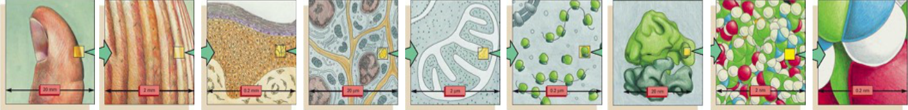
Cells
Viruses
Proteins
Atoms
microED
Single Particle Cryo-TEM
Cryo-TEM Tomography (Cryo-ET)
NMR
Small Angle X-ray Scattering
X-ray Microscopy
X-ray Crystallography
Light Microscopy
1 mm
100 µm
10 µm
1 µm
100 nm
10 nm
1 nm
1 Å
A Structural Biologist’s Dream
See protein structures directly inside cells — no purification needed
Single Particle Analysis
Purified proteins to atomic models (<4 Å)
Cryo-Electron Tomography
3D imaging of intact cells at molecular resolution
In Situ Structural Biology
Protein complexes in their native cellular environment
Future: Cellular Cryo-EM
FIB-SEM milling + cryo-ET enables imaging within intact cells at ~15–30 Å, with subtomogram averaging pushing toward near-atomic detail.
Chakraborty et al., Protein Science (2020) · Kühlbrandt, Science (2014) · Turk & Bhatt, Nat Rev Mol Cell Biol (2024)
Single Particle Analysis (SPA) Workflow
🧪
Sample Prep
Protein purification → negative stain screening → grid optimization → vitrification
→
🔬
Data Collection
Automated imaging on Krios/Glacios; 1,000–10,000+ micrograph movies (1–3 days)
→
💻
Processing
Motion correction → CTF → picking → 2D/3D classification → refinement
→
🧬
Model Building
Atomic model fitting into density map → real-space refinement → validation
Typical Project Timeline
- Protein purification: 2–3 months (expression, purification, SEC/DLS/Mass Phot. quality assessment)
- Sample screening: ~2 weeks (negative stain + initial cryo-EM grid optimization)
- Data collection: 1–3 days per dataset
- Processing: Hours to days (GPU-intensive)
- Model building: Days to weeks
- Total: ~1–6 months from purified protein to deposited structure
Critical Bottleneck
Sample preparation is the most time-consuming and unpredictable step. Grid optimization alone can take weeks of trial-and-error — ice thickness, particle distribution, and orientation are all highly variable.
Tip: Invest in thorough biochemical characterization (SEC, DLS, mass photometry) before moving to cryo-EM grid preparation. Poor sample quality is the #1 cause of failed projects.
Cheng et al., Cell (2015) · Thompson et al., Star Protocols (2021) · Passmore & Russo, Methods Enzymol (2016)
Sample Preparation — Overview & Challenges
Key Challenges
- Size limitation — Particles below ~50 kDa have low SNR; may require scaffold or Fab augmentation
- Sample purity — Requires highly purified, monodisperse protein (>90% homogeneity)
- Concentration — 0.5–5 mg/mL; too high = aggregation, too low = empty holes
- Vitrification — Ice thickness, preferred orientation, air-water interface denaturation
- Reproducibility — Manual blotting remains variable; automated systems improving
Key Requirement
The specimen must be biochemically well-behaved: stable, monodisperse, and structurally homogeneous in the buffer conditions used for grid preparation.
Halfon et al., Faraday Discuss (2022) · Weissenberger et al., Nat Methods (2021) · Drulyte et al., Acta Cryst D (2018)
Problems and Limitations of Cryo-EM
Sample
- Size limitation — Particles <50 kDa challenging (low SNR)
- Purity required — >90% homogeneity essential
- Vitrification — Ice thickness, preferred orientation, AWI denaturation
- Reproducibility — Manual blotting highly variable
Microscopy
- Beam damage — Electrons destroy biological structure
- Low dose — Only 20–60 e−/Ų allowed → very noisy images
- Imperfect imaging — CTF, lens aberrations, specimen charging
- Equipment cost — Titan Krios: $5–8M + $500K/yr maintenance
Data Processing
- Complex pipeline — Motion correction → CTF → picking → 2D/3D
- Heterogeneity — Multiple conformations complicate analysis
- Interpretation — Map quality varies; model bias risk
- Computing — GPU clusters needed; TB-scale data
The Bottom Line
The process remains slow, manual, and non-reproducible — especially sample preparation. Despite the “resolution revolution,” cryo-EM still requires significant expertise at every step. Sample quality is the #1 determinant of success.
Glaeser, Nat Methods (2016) · Drulyte et al., Acta Cryst D (2018) · Henderson, Angew Chem (2013)